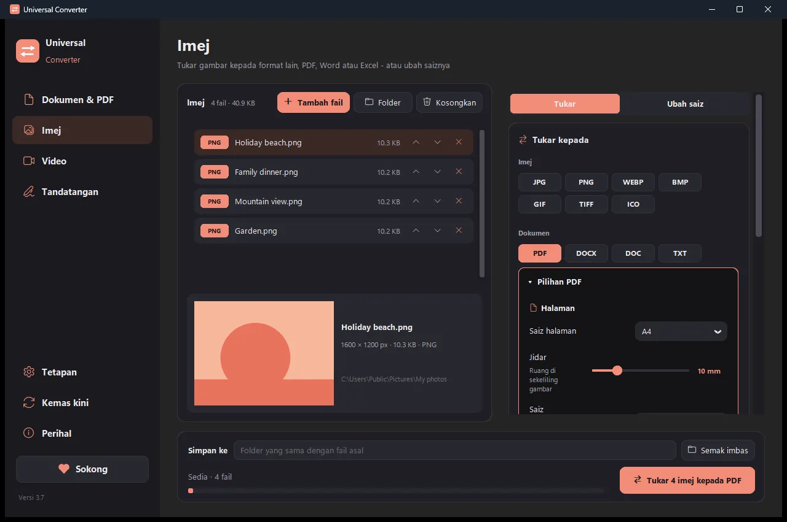
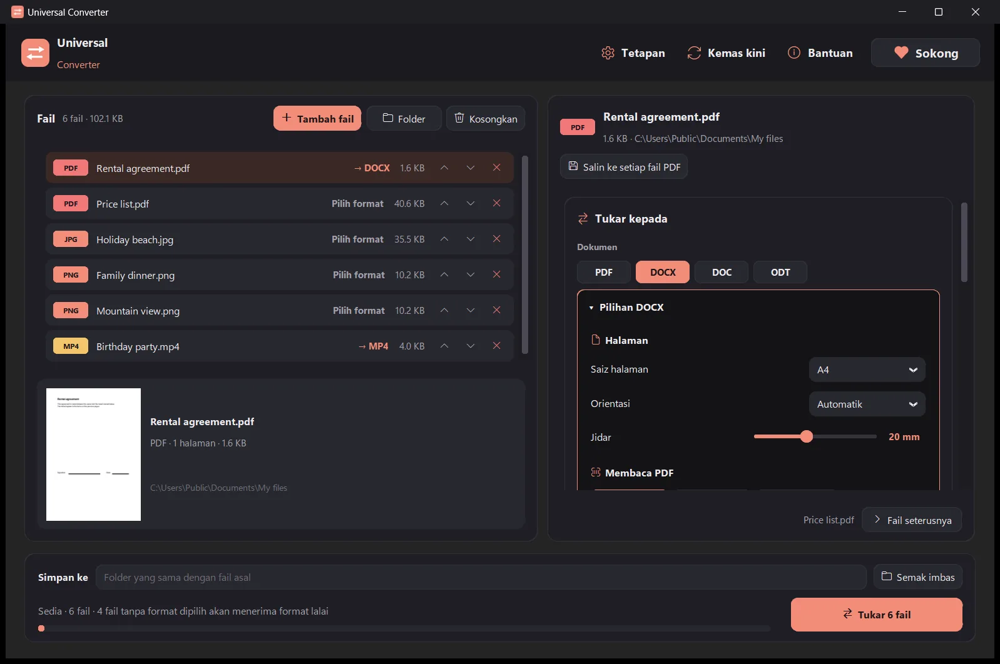
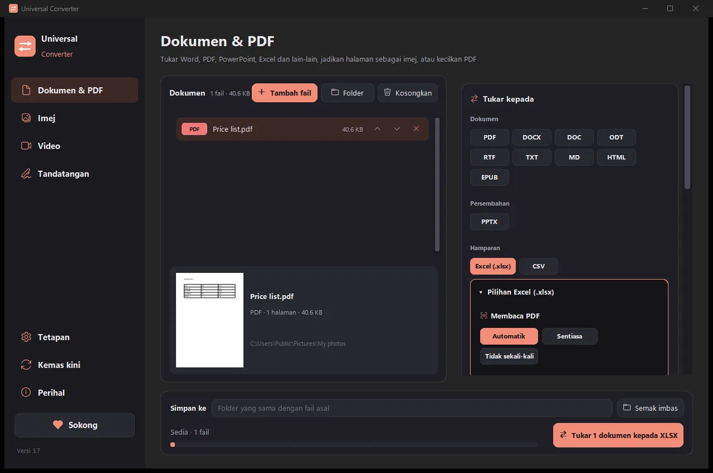
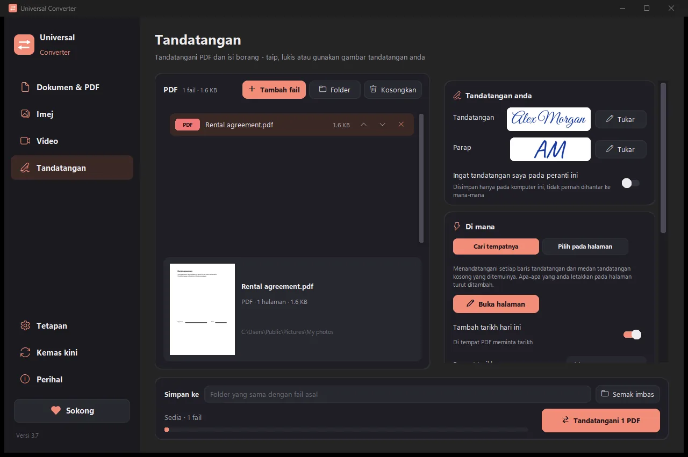
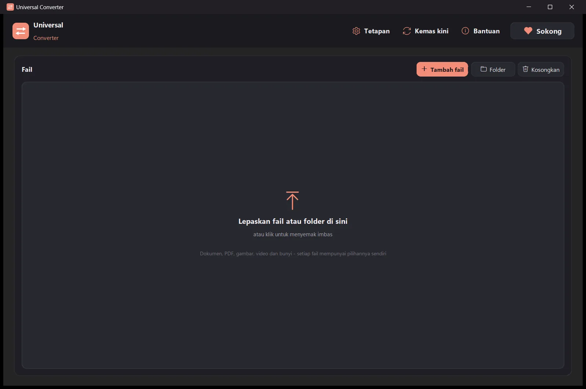

Tukar fail anda pada peranti anda sendiri
Imej, dokumen, video dan audio, PDF dan jadual ke Excel, semuanya dalam satu aplikasi. Tiada apa-apa dimuat naik: fail anda tidak pernah meninggalkan peranti anda.
Cara memasang dan mengemas kini
- Buka fail .dmg yang dimuat turun dan seret Universal Converter ke Aplikasi.
- Buka aplikasi. Kali pertama, macOS menyekatnya kerana ia tidak ditandatangani oleh Apple: klik Selesai.
- Buka Seting Sistem > Privasi & Keselamatan, tatal ke bawah, klik Buka Juga dan masukkan kata laluan anda. Anda hanya perlu melakukannya sekali.
Kemas kini: jika anda membenarkannya semasa aplikasi mula-mula dibuka, ia mencari versi baharu setiap kali dimulakan, mengesahkan tandatangan digitalnya dan memasangnya apabila anda memilih.
Cara memasang dan mengemas kini
- Ketik Muat turun untuk Android pada telefon anda.
- Buka fail yang dimuat turun. Jika Android bertanya, benarkan penyemak imbas atau pengurus fail anda memasang aplikasi.
- Ketik Pasang.
Kemas kini: apabila anda membuka aplikasi, ia menyemak versi baharu dan memberitahu anda apabila sudah sedia. Muat turunnya dengan cara yang sama dan pasang di atas versi lama; tetapan anda dikekalkan.
Cara memasang dan mengemas kini
- Muat turun fail .AppImage.
- Jadikannya boleh laku: klik kanan, buka Sifat > Kebenaran dan benarkan ia dijalankan sebagai program (atau dalam terminal: chmod +x Universal-Converter-*.AppImage).
- Dwiklik padanya. Tiada apa-apa dipasang: aplikasi ini ialah satu fail ini.
Kemas kini: jika anda membenarkannya semasa aplikasi mula-mula dibuka, ia mencari versi baharu setiap kali dimulakan, mengesahkan tandatangan digitalnya dan menggantikan fail AppImage di tempatnya.

Peribadi
Semuanya berjalan pada peranti anda. Tiada muat naik, tiada giliran menunggu, tiada had saiz.
Percuma
Percuma untuk digunakan, tanpa iklan, tanpa akaun dan tanpa tera air.
34 bahasa
Inggeris, Greek, Sepanyol, Itali, Jerman, Perancis, Portugis (Portugal dan Brazil), Poland, Rusia, Arab, Ibrani, Cina, Jepun, Korea, Tamil, Afrikaans, Yoruba, Hausa, Hindi, Indonesia, Turki, Vietnam, Sweden, Belanda, Denmark, Ukraine, Czech, Romania, Bulgaria, Norway, Melayu, Filipino dan Swahili.
Lima alat dalam satu tetingkap

Dokumen & PDF
Tukar antara PDF, Word, ODT, RTF, TXT, Markdown, HTML, EPUB, PowerPoint dan Excel. Jadikan halaman sebagai imej dan gabungkan beberapa fail menjadi satu PDF. Fon, saiz dan warna dikekalkan. Kecilkan PDF mengikut saiz yang anda pilih. Imbasan dan borang yang telah diisi menjadi teks dan jadual yang boleh disunting, disusun seperti halaman. Jadual, termasuk yang tanpa garisan seperti pada penyata bank, masuk ke Word sebagai jadual sebenar, dan fail Word lama (.doc) serta PowerPoint lama (.ppt) boleh dibuka.
Imej
Tukar antara JPG, PNG, WEBP, TIFF, BMP, GIF dan ICO. Ubah saiz mengikut piksel, peratus atau saiz fail, gabungkan gambar menjadi fail PDF atau Word, dan baca teks dalam gambar (OCR). PDF juga boleh ditambah: setiap halaman menjadi gambar.

Video
Tukar video antara MP4, MKV, WebM, MOV dan AVI dan mampatkannya dengan AV1, H.265, H.264 atau VP9. Potong, pangkas, putar dan ubah saiz, buat GIF, simpan bingkai sebagai gambar, atau simpan bunyi sahaja sebagai MP3, M4A, AAC, FLAC, WAV, AIFF, OGG, AC-3, MP2, WavPack, MKA, CAF atau Opus. Dengan beberapa video, setiap satu boleh mempunyai tetapan sendiri. Pada Android: MP4, MKV, WebM, MOV atau GIF, atau bunyi sebagai MP3, M4A, AAC, OGG, Opus, FLAC, WAV, AIFF atau MKA; potong, pangkas, putar, ubah saiz dan simpan bingkai.

Excel
Tarik jadual daripada PDF, imbasan dan foto ke Excel atau CSV: penyata bank, invois, senarai harga. Membaca bahasa Greek, Inggeris, Sepanyol dan lebih daripada 30 bahasa lain.

Tandatangan
Tandatangani PDF dan isi borang. Taip nama anda dalam gaya tulisan tangan, lukis tandatangan anda atau gunakan fotonya. Setiap PDF dibuka dengan baris tandatangan yang ditemui aplikasi sudah ditanda: klik atau ketik baris itu, atau di tempat tandatangan, parap, tarikh, teks atau tanda semak patut diletakkan. Tandatangani banyak fail sekali gus; fail asal kekal tidak disentuh.
- Menggunakan kad grafik anda untuk video apabila boleh: biasanya 5 hingga 20 kali lebih pantas.
- Seret masuk seluruh folder: setiap fail ditukar sekali gus.
- Satu skrin untuk semua fail: tambah dokumen, gambar dan video bersama, dan setiap satu mendapat pilihannya sendiri.
- Memberitahu anda tentang versi baharu; pada Windows, Mac dan Linux ia boleh memasangnya untuk anda, disahkan secara digital.
- Rupa cerah dan gelap, mengikut peranti anda.
Cara ia berfungsi
- Buka Universal Converter.
- Seret fail anda atau seluruh folder ke dalam tetingkap, atau klik Tambah fail.
- Klik Tukar. Fail baharu disimpan di sebelah fail asal, atau dalam folder yang anda pilih.

Apa yang boleh dilakukan
- Tukar PDF kepada Word
- Tukar dokumen Word kepada PDF
- Gabungkan beberapa fail menjadi satu PDF
- Mampatkan PDF kepada saiz yang anda pilih
- Mampatkan PDF kepada 100 KB, 200 KB atau apa-apa saiz untuk borang dalam talian
- Tukar halaman PDF kepada imej JPG
- Jadikan dokumen imbasan sebagai fail Word yang boleh disunting
- Tukar gambar antara JPG, PNG, WEBP dan banyak lagi
- Ubah saiz gambar atau kecilkannya kepada saiz fail
- Ubah saiz foto atau tandatangan kepada 20 KB, 50 KB atau piksel yang tepat
- Gabungkan foto menjadi satu PDF
- JPG kepada PDF di bawah 100 KB
- Salin teks daripada gambar (OCR)
- Mampatkan video tanpa memuat naiknya
- Tukar video antara MP4, MKV, WebM, MOV dan AVI
- Simpan bunyi video sebagai MP3
- Buat GIF daripada video
- Tarik jadual daripada PDF ke Excel
- Tukar penyata bank PDF kepada Excel
- Ekstrak jadual daripada invois PDF ke Excel
- Tandatangani PDF
- Isi borang PDF
Soalan
Adakah ia benar-benar percuma?
Ya. Universal Converter percuma untuk digunakan, tanpa iklan, tanpa akaun dan tanpa had masa. Jika ia membantu anda, anda boleh menyokong pembangunannya dengan sumbangan sukarela, tetapi anda tidak pernah wajib berbuat demikian.
Adakah fail saya dimuat naik ke mana-mana?
Tidak. Setiap penukaran berlaku pada peranti anda sendiri, jadi ia juga berfungsi tanpa sambungan internet. Aplikasi hanya pergi ke internet untuk mencari kemas kini, untuk memuat turun abjad pengecaman teks yang anda pilih dan, jika anda membenarkannya, untuk menghantar laporan ralat tanpa nama.
Adakah selamat untuk memuat turunnya?
Ya. Sebelum diletakkan di halaman ini, muat turun Windows, Mac, Linux dan Android bagi setiap versi diimbas oleh kira-kira 60–70 enjin antivirus di VirusTotal; pautan di bawah setiap butang muat turun membuka laporan fail itu. Aplikasi tidak memaparkan iklan dan tidak mengumpul data peribadi, dan versi Microsoft Store juga disemak dan ditandatangani oleh Microsoft.
Windows memaparkan amaran SmartScreen. Adakah itu biasa?
Ya. Pemasang belum ditandatangani kod, jadi Windows tidak mengenalinya. Pilih "Maklumat lanjut", kemudian "Jalankan juga". Kemas kini selepas itu disahkan secara digital oleh aplikasi itu sendiri. Atau pasangnya dari Microsoft Store, yang tidak memaparkan amaran.
Bagaimana saya membukanya pada Mac?
Buka fail yang dimuat turun dan seret Universal Converter ke Aplikasi. Aplikasi ini tidak ditandatangani oleh Apple, jadi kali pertama anda membukanya macOS menyekatnya: klik Selesai, kemudian buka Seting Sistem > Privasi & Keselamatan, klik "Buka Juga" dan masukkan kata laluan anda. Anda hanya perlu melakukannya sekali.
Bagaimana saya memasangnya pada Android?
Muat turun APK pada telefon anda, bukanya dan benarkan pemasangan apabila diminta (Android 10 atau lebih baharu). Kesemua 34 bahasa sudah terbina dalam; pilih satu dalam Tetapan aplikasi. Aplikasi memberitahu anda apabila ada versi baharu.
Bahasa apakah yang digunakannya?
Aplikasi ini tersedia dalam bahasa Inggeris, Greek, Sepanyol, Itali, Jerman, Perancis, Portugis (Portugal dan Brazil), Poland, Rusia, Arab, Ibrani, Cina, Jepun, Korea, Tamil, Afrikaans, Yoruba, Hausa, Hindi, Indonesia, Turki, Vietnam, Sweden, Belanda, Denmark, Ukraine, Czech, Romania, Bulgaria, Norway, Melayu, Filipino dan Swahili. Anda memilih dalam pemasang, atau kemudian dalam Tetapan.